There are different types and levels of closure models available in
GOTM to compute the vertical turbulent fluxes. Simple models rely on
the idea that theses fluxes can be computed as the product of a
positive turbulent diffusivity and a mean flow gradient. Contributions
to the fluxes that are not `down-gradient', are summarized in
so-called counter-gradient terms. Using these assumptions, the fluxes
of momentum and buoyancy can be expressed as
where
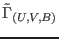 denote the counter-gradient fluxes.
They can be important under very strong stratification and in the case
of convection. Note, that the current version of GOTM identifies the
diffusivities of heat and salt with 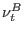 (see
section 3.10 and section 3.11).
Using an analogy to the kinetic theory of gases, the vertical
turbulent diffusivities, 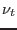 and , are often assumed to be the
product of a typical velocity scale of turbulence, , times a
typical length scale,  , see Tennekes and Lumley (1972). The velocity
scale can e.g. be identified with the average value of the
turbulent fluctuations expressed by the turbulent kinetic energy, 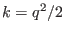. Then, the diffusivities of momentum and heat can be written
as
, see Tennekes and Lumley (1972). The velocity
scale can e.g. be identified with the average value of the
turbulent fluctuations expressed by the turbulent kinetic energy, 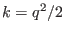. Then, the diffusivities of momentum and heat can be written
as
where the dimensionless quantities  and 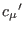 are usually
referred to as the `stability functions'. Depending on the level of
turbulent closure, these stability functions can be either constants,
empirical functions, or functions of some non-dimensional flow parameters
resulting from a higher-order turbulence model. The same applies to
the counter-gradient fluxes
defined in (45).
and 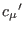 are usually
referred to as the `stability functions'. Depending on the level of
turbulent closure, these stability functions can be either constants,
empirical functions, or functions of some non-dimensional flow parameters
resulting from a higher-order turbulence model. The same applies to
the counter-gradient fluxes
defined in (45).
There are different possibilities in GOTM to compute the scales (or
 ) and appearing in (46). According to the level of
complexity, they are ordered in GOTM in the following fashion.
) and appearing in (46). According to the level of
complexity, they are ordered in GOTM in the following fashion.
- Both, and are computed from algebraic relations. The
algebraic equation for is based on a simplified form of the
transport equation of the turbulent kinetic energy. The
equation for the length-scale may result from different approaches. The
most simple models assume an empirically motivated, prescribed
vertical distribution of the length-scale. This level of closure
corresponds to the `level 2' model of Mellor and Yamada (1982), but also
to more recent approaches, see Cheng et al. (2002). Algebraic models
are an over-simplification in numerous situations.
- At the next level, is computed from the differential
transport equation for the turbulent kinetic energy (`energy models'). As
before, the length-scale is computed from an empirically or theoretically
based relation. Models of this type are quite popular in geophysical
modelling. A description is given in section 4.19.
- In the so-called two-equation models, both, and , are computed from
differential transport equations. As before, follows from the
transport equation of the turbulent kinetic energy. Now, however, also
the length-scale is determined from a differential transport
equation. This equation is usually not directly formulated for the
length-scale, but for a related, length-scale determining
variable. Presently, there are different possibilities for the
length-scale determining variables implemented in GOTM, such as the
rate of dissipation,
 , or the product 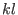. They are
discussed in section 4.7.9.
, or the product 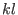. They are
discussed in section 4.7.9.
The main advantage of the two-equation models is their greater
generality. There are, for example, a number of fundamental flows
which cannot be reproduced with an algebraically prescribed
length-scale. Examples are the temporal decay of homogeneous
turbulence, the behaviour of turbulence in stratified
homogeneous shear flows, and the spatial decay of shear-free
turbulence from a planar source. A discussion of these points is
given in section 4.7.3 and section 4.7.4. Also see
Umlauf et al. (2003) and Umlauf and Burchard (2003).
In addition to the hierarchy of turbulence models in terms of their
methods used to compute the turbulent kinetic energy and the
length-scale, GOTM also supports an ordering scheme according to the
extent to which transport equations for the turbulent fluxes are solved.
- At the lowest level of this scheme, it is postulated that
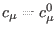 and
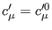 are constant. Because these
models implicitly assume an isotropic tensor relation between the velocity
gradient and the tensor of the Reynolds-stresses, they usually fail
in situations of strong anisotropy, most notably in stably
stratified, curved or shallow flows. In unstratified flows with
balanced aspect ratios (which seldom occur in nature), however, they
may compute reasonable results. Models of this type are referred to
as the `standard' models in the following.
- Some problems associated with standard versions of the models can
be ameliorated by making and
 empirical functions of
one or several significant non-dimensional flow parameters. At this
level, the simplest approach would be to formulate empirical
relations suggested from observations in the field or in the
laboratory. An example of such a relation is the model of
Schumann and Gerz (1995) which has been implemented in GOTM (see
section 4.29).
empirical functions of
one or several significant non-dimensional flow parameters. At this
level, the simplest approach would be to formulate empirical
relations suggested from observations in the field or in the
laboratory. An example of such a relation is the model of
Schumann and Gerz (1995) which has been implemented in GOTM (see
section 4.29).
- Another, more consistent, approach results from the solution of
simplified forms of the transport equations for the Reynolds-stresses
and the turbulent heat fluxes in addition to the transport equations
for and the length-scale determining variable. Surprisingly, it
turns out that under some assumptions, and after tedious algebra, the
turbulent fluxes computed by these models can be expressed by
(46). The important difference is, however, that the existence of
vertical eddy diffusivities is not a postulate, but a consequence
of the model. The stability functions and can be
shown to become functions of some non-dimensional numbers like
with the shear-frequency, 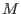, and the buoyancy frequency, 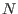,
computed as described in section 3.5 and
section 3.14, respectively. and  are the
turbulent kinetic energy and the buoyancy variance, respectively and
denotes the rate of dissipation.
are the
turbulent kinetic energy and the buoyancy variance, respectively and
denotes the rate of dissipation.
The most well-known models of this type have been
implemented into GOTM. An up-to-date account of their derivation can
be found in Canuto et al. (2001). Their evaluation for the oceanic
mixed layer has been extensively discussed by
Burchard and Bolding (2001).
- Even more complete models include further differential equations for the
buoyancy variance and for some or all of the turbulent fluxes. These
models cannot be reduced to the form (46). The derivation of models
of the type discussed in the latter two points are reviewed in
section 4.2
Evidently, this short introduction cannot serve as an
introductory text on one-point turbulence modelling. It serves merely
as a place to define the most important quantities and relations used
in this manual. Readers not familiar with this subject will certainly
feel the need for a more in-depth discussion. An excellent introduction
to turbulence is still the book of Tennekes and Lumley (1972). A modern
and detailed approach to one and two-equation models for unstratified
flows is given in the book of Wilcox (1998), and the effects of
stratification are discussed e.g. by Rodi (1987) and by
Burchard (2002b).
Karsten Bolding
2012-12-28